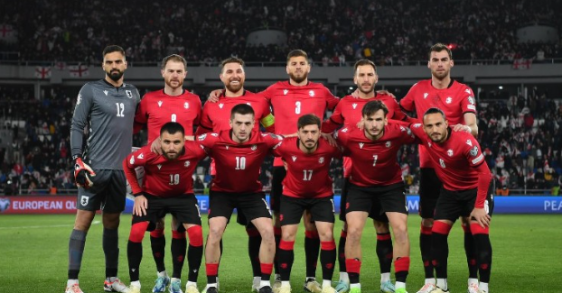

Football is a family of team sports that involve, to varying degrees, kicking a ball to score a goal. Unqualified, the word football generally means the form of football that is the most popular where the word is used. Sports commonly called football include association football (known as soccer in Australia, Canada, South Africa, the United States, and sometimes in Ireland and New Zealand); Australian rules football; Gaelic football; gridiron football (specifically American football, arena football, or Canadian football); International rules football; rugby league football; and rugby union football. These various forms of football share, to varying degrees, common origins and are known as "football codes". There are a number of references to traditional, ancient, or prehistoric ball games played in many different parts of the world. Contemporary codes of football can be traced back to the codification of these games at English public schools during the 19th century, itself an outgrowth of medieval football. The expansion and cultural power of the British Empire allowed these rules of football to spread to areas of British influence outside the directly controlled Empire. By the end of the 19th century, distinct regional codes were already developing: Gaelic football, for example, deliberately incorporated the rules of local traditional football games in order to maintain their heritage. In 1888, the Football League was founded in England, becoming the first of many professional football associations. During the 20th century, several of the various kinds of football grew to become some of the most popular team sports in the world.
